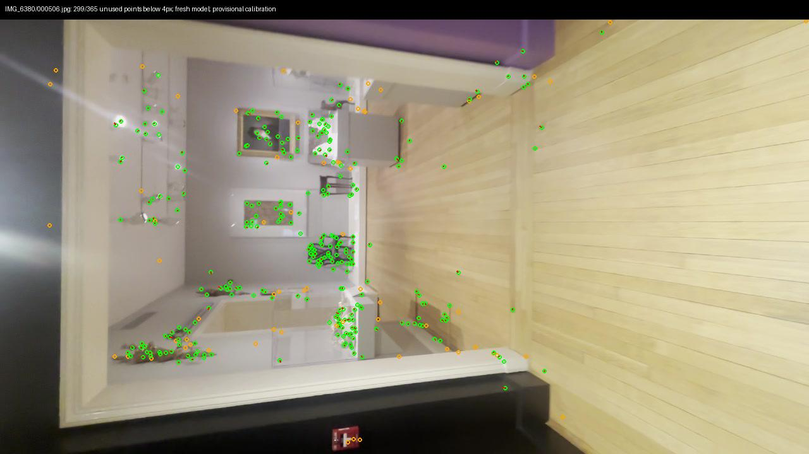
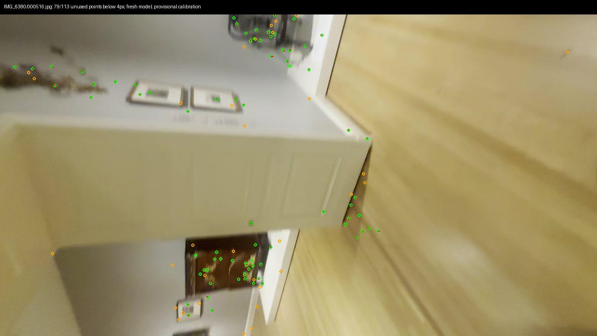
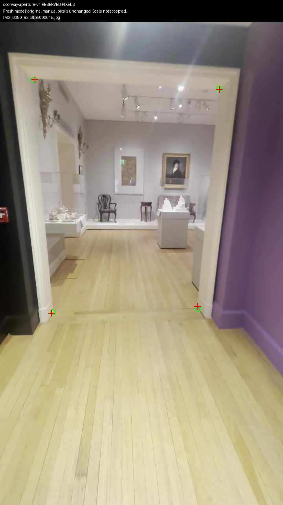
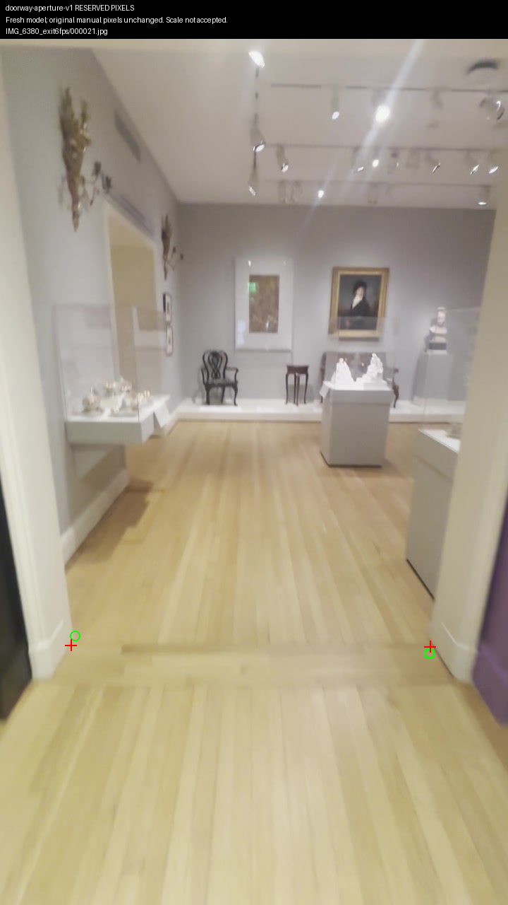
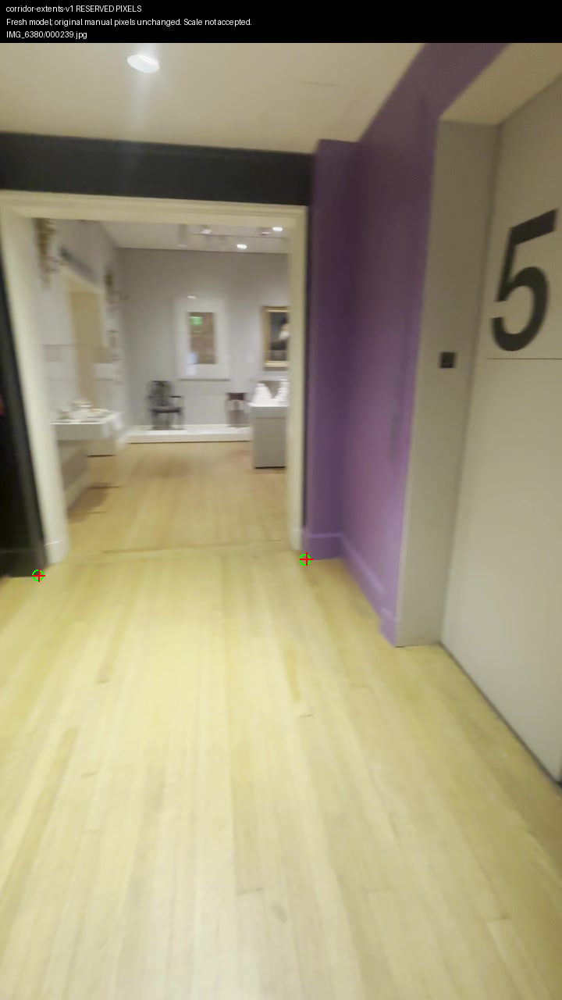
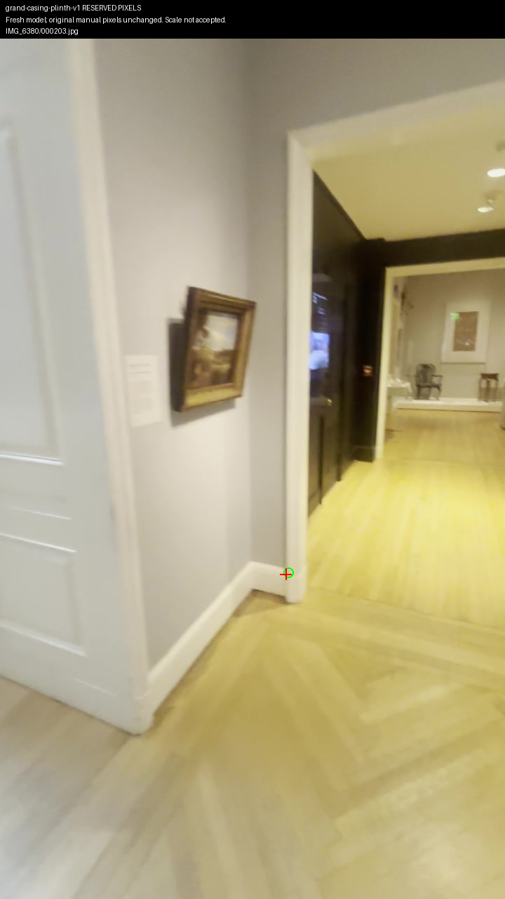
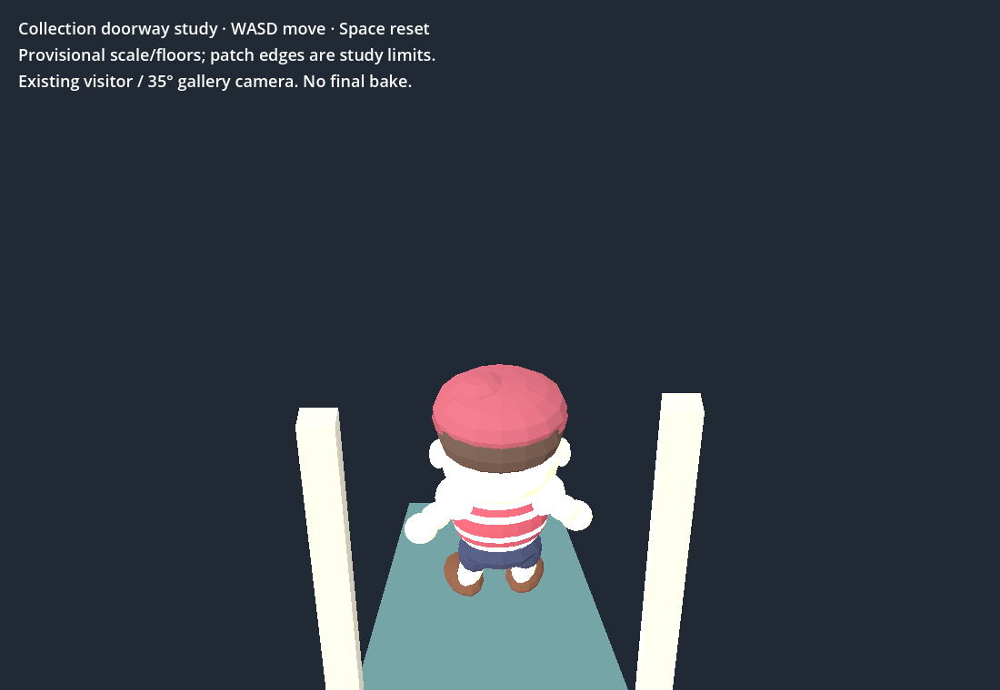
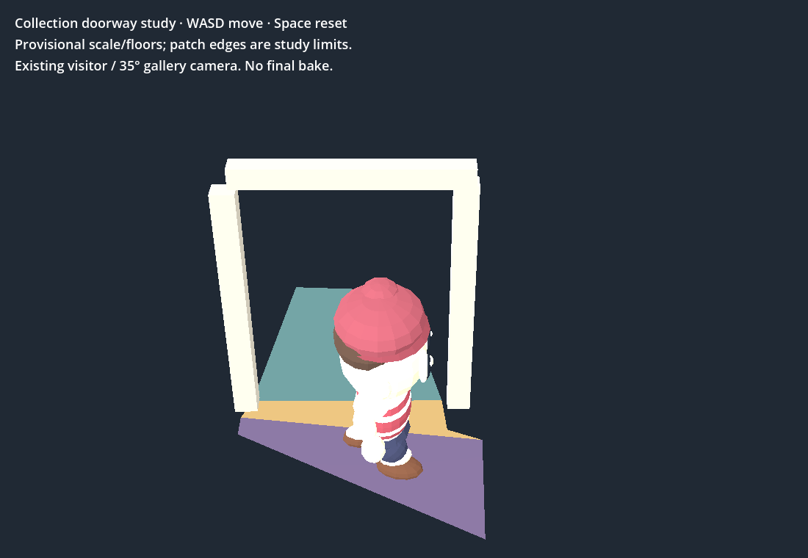

Fresh reconstruction removes the two leaked references. 473 recovered views; 43,042 points; fitted error 0.640691px. No old geometry seed or repeated feature matching.
45/69 withheld photographs pass the disjoint-point pose check. Exit 506 and 516 now pass after rebuilding. These are nearby frames from the same videos, with provisional inherited intrinsics; they do not prove independent survey accuracy.
| Measurement | Fresh-model result |
|---|---|
| Original full opening | Fails ray separation: minimum 0.587°; pixel maximum 6.473px |
| New bottom toes (13/19 → 21) | Fails unchanged 8px gate: 14.342 / 9.428px |
| Corridor casing / Grand toe / shoulder | Original picks pass: 2.234 / 0.555 / 4.419px |
No floor/collision extension or full room acceptance. Existing bounded walk passes 24 native/browser checks and real WASD round trip. Native p95 8.33ms; Chrome sampled p95 16.67ms, ready 2.631s on RTX4070SUPER. Shell has six earlier failure names. No 3D Viewer changes, production integration or paid calls.
Orbit the fresh observed point cloud · Walk existing bounded study (WASD) · All 69 validation results · Original-pick checks · Failed toe trial · Preservation/allowlist checks · Sources and hashes







